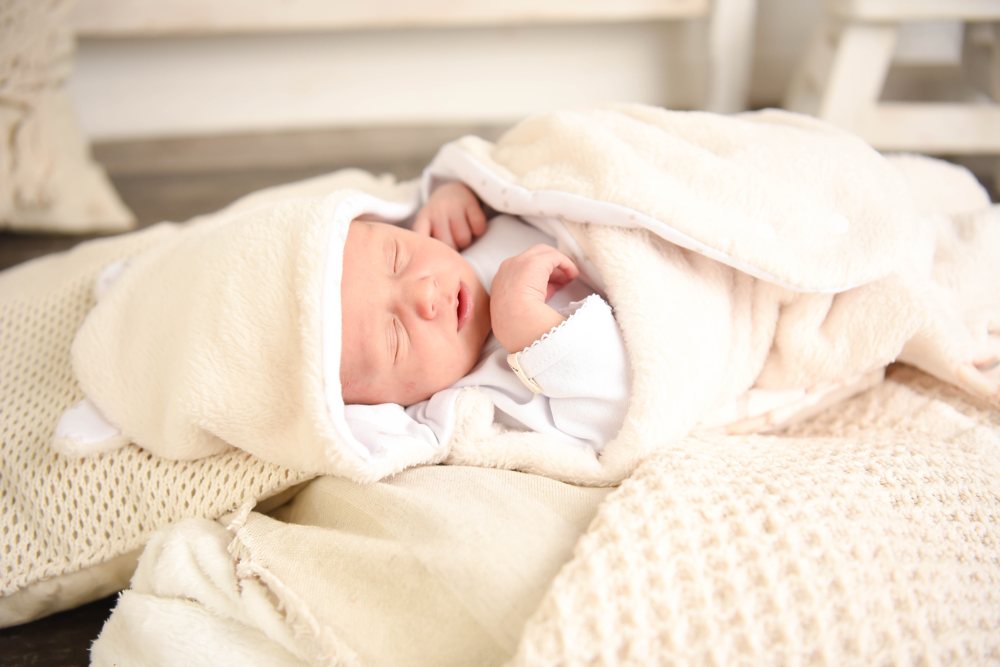
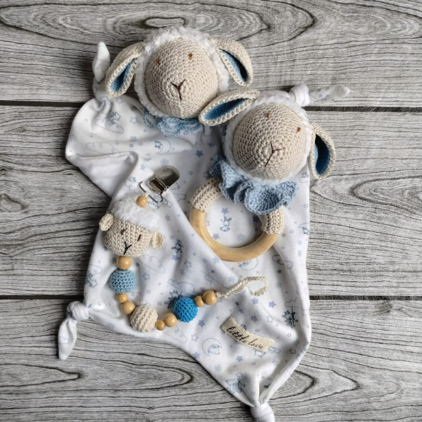

Consejos para elegir los mejores productos para tu bebé
La llegada de un bebé es un momento muy especial en la vida de una madre. Es por eso que es importante elegir los mejores productos para garantizar su bienestar y seguridad. Los productos que elijas deben ser seguros, cómodos y adaptarse a las necesidades específicas de tu bebé.
Los productos para bebés más populares incluyen los muñecos de apego, portachupetes y sonajeros. Estos juguetes ayudan a los bebés a desarrollar su coordinación motora y les brindan una sensación de seguridad y confort.
Al elegir estos productos, asegúrate de que estén hechos con materiales de alta calidad, como algodón orgánico y madera sin tratar. Estos materiales son seguros para los bebés y no contienen productos químicos dañinos.
También es importante elegir productos que sean fáciles de limpiar y mantener. Los productos que se pueden lavar a máquina son ideales para los padres ocupados que buscan productos de bajo mantenimiento.
En resumen, al elegir productos para bebés, es importante tener en cuenta la seguridad, la comodidad y las necesidades específicas de tu bebé. Con la elección adecuada de productos, puedes estar seguro de que tu bebé estará cómodo, seguro y feliz.